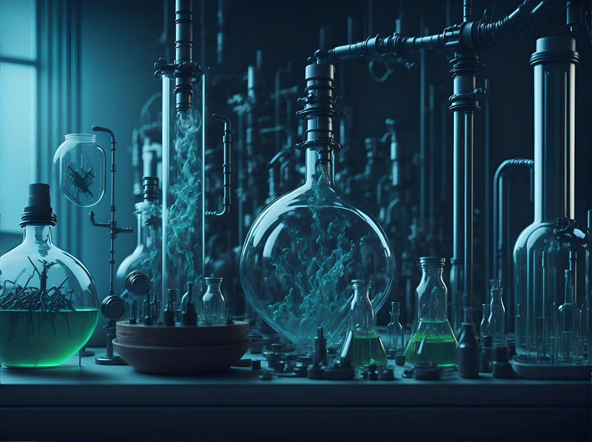

SUPRAS: Líquidos Nanoestructurados que Transforman la Química Analítica

La química verde ha impulsado la búsqueda de alternativas más sostenibles y eficientes en los procesos de extracción analítica, reduciendo la dependencia de disolventes orgánicos convencionales. Los disolventes supramoleculares (SUPRAS) han surgido como una solución innovadora y versátil para superar las limitaciones de métodos tradicionales. Estos líquidos nanoestructurados, formados por el autoensamblaje de anfífilos, ofrecen múltiples ventajas: desde la capacidad de adaptarse a diferentes tipos de analitos hasta su menor impacto ambiental. Los SUPRAS permiten extraer compuestos en un rango amplio de polaridades y han mostrado ser útiles en áreas como el análisis alimentario, medioambiental y biológico.
En el documento "Disolventes Supramoleculares: Diseño y Aplicaciones", se presenta una revisión detallada sobre los fundamentos, la formación y las aplicaciones prácticas de los SUPRAS. Este texto destaca cómo estos disolventes han revolucionado la preparación de muestras analíticas al ser compatibles con técnicas avanzadas como la cromatografía de gases y líquidos acopladas a espectrometría de masas. Además, se abordan los desafíos actuales y las oportunidades futuras para mejorar la eficiencia y sostenibilidad de los procesos analíticos utilizando SUPRAS. Este trabajo es una valiosa referencia para investigadores y profesionales interesados en soluciones ecológicas e innovadoras en la química analítica.